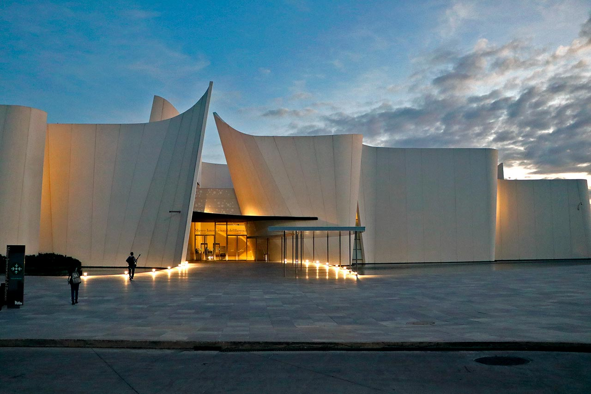
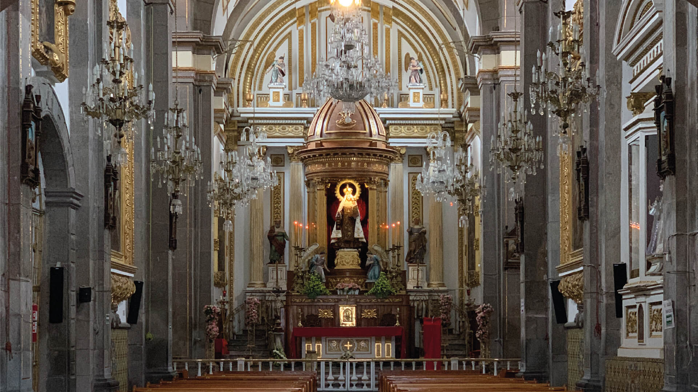

El estado de Puebla ofrece una riqueza cultural e histórica única. El Centro Histórico de Puebla es un tesoro arquitectónico con sus calles empedradas. Entre sus zonas más emblemáticas también se encuentra el Acuario Michìn, la Iglesia de San Francisco o el Museo del Alfeñique de Puebla, que ofrece vistas espectaculares de la ciudad. Para quienes desean salir de la ciudad, lugares como Cholula con su gran pirámide, y Cuetzalan con su clima templado, son destinos cercanos ideales.


